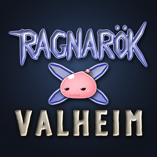

<!doctype html>
<html lang="en">
<head>
<meta charset="utf-8">
<meta name="viewport" content="width=device-width, initial-scale=1, viewport-fit=cover">
<title>Ragnarok RPG Wiki</title>
<meta name="claude:viewport-fit-sides" content="cover">
<meta name="description" content="Player wiki for Ragnarok RPG, the Ragnarok Online job and skill mod for Valheim.">
<link rel="icon" href="icons/logo.png">
<link rel="preconnect" href="https://fonts.googleapis.com">
<link rel="preconnect" href="https://fonts.gstatic.com" crossorigin>
<link rel="stylesheet" href="https://fonts.googleapis.com/css2?family=Cinzel:wght@600;800&display=swap">
<style>
/* Layout: an RO client screen. A menu window on the left, content windows on the right; every panel is an RO
   window (blue gradient title bar, pale body). Light = Prontera's sky by day, dark = a Valheim night. */
:root {
  --sky-top: #bcd8f2;
  --sky-bottom: #eef4ea;
  --win: #fbfcfe;
  --win-alt: #eef2f9;
  --edge: #93a3c2;
  --title-a: #7d9dd3;
  --title-b: #4d6cab;
  --title-ink: #ffffff;
  --ink: #2a3146;
  --muted: #5d6882;
  --link: #2c5bb0;
  --gold: #a87a1f;
  --pink: #ef8fb1;
  --good: #2f8a4a;
  --bad: #b8433a;
  --shadow: 0 2px 0 rgba(40, 60, 110, .12), 0 8px 24px rgba(40, 60, 110, .14);
  --sel: #dfe8fa;

  --el-neutral: #8b8f98; --el-water: #3f7fd0; --el-earth: #9a6b37; --el-fire: #d2522f; --el-wind: #4f9f53;
  --el-poison: #8a4fb0; --el-holy: #c9a031; --el-shadow: #4d3d6b; --el-ghost: #8b8fc9; --el-undead: #556556;

  --display: "Cinzel", "Trajan Pro", Georgia, serif;
  --body: Tahoma, Verdana, "Segoe UI", "DejaVu Sans", sans-serif;
}
@media (prefers-color-scheme: dark) {
  :root:not([data-theme="light"]) {
    --sky-top: #0b1122; --sky-bottom: #17203a; --win: #1a2238; --win-alt: #212b45; --edge: #3d4c70;
    --title-a: #45639c; --title-b: #2a3e6b; --title-ink: #f1f5ff; --ink: #dde4f3; --muted: #97a3bf;
    --link: #8fb5ff; --gold: #e0b558; --pink: #f3a0bf; --good: #6fcf86; --bad: #f08a7e;
    --shadow: 0 2px 0 rgba(0, 0, 0, .3), 0 10px 28px rgba(0, 0, 0, .4); --sel: #2a3758;
    color-scheme: dark;
  }
}
:root[data-theme="dark"] {
  --sky-top: #0b1122; --sky-bottom: #17203a; --win: #1a2238; --win-alt: #212b45; --edge: #3d4c70;
  --title-a: #45639c; --title-b: #2a3e6b; --title-ink: #f1f5ff; --ink: #dde4f3; --muted: #97a3bf;
  --link: #8fb5ff; --gold: #e0b558; --pink: #f3a0bf; --good: #6fcf86; --bad: #f08a7e;
  --shadow: 0 2px 0 rgba(0, 0, 0, .3), 0 10px 28px rgba(0, 0, 0, .4); --sel: #2a3758;
  color-scheme: dark;
}

* { box-sizing: border-box; }
html { background: var(--sky-bottom); }
body {
  margin: 0; min-height: 100vh; font: 15px/1.65 var(--body); color: var(--ink);
  background: linear-gradient(180deg, var(--sky-top), var(--sky-bottom) 70vh) fixed, var(--sky-bottom);
  padding-left: max(16px, env(safe-area-inset-left, 0px));
  padding-right: max(16px, env(safe-area-inset-right, 0px));
  padding-block: 20px 40px;
}
a { color: var(--link); }
a:focus-visible, button:focus-visible, input:focus-visible { outline: 2px solid var(--gold); outline-offset: 2px; }
img.px { image-rendering: pixelated; }
h1, h2 { font-family: var(--display); text-wrap: balance; line-height: 1.2; margin: 0; }
p { margin: 0; max-width: 68ch; }
code { font: 13px/1.4 ui-monospace, "Cascadia Mono", Consolas, monospace; background: var(--win-alt); border: 1px solid var(--edge); border-radius: 3px; padding: 0 4px; white-space: nowrap; }

.shell { max-width: 1240px; margin: 0 auto; display: grid; grid-template-columns: 240px minmax(0, 1fr); gap: 18px; align-items: start; }

/* RO window */
.win { background: var(--win); border: 1px solid var(--edge); border-radius: 7px; box-shadow: var(--shadow); overflow: hidden; min-width: 0; }
.win > .bar {
  display: flex; align-items: center; gap: 8px; padding: 3px 8px 3px 10px; min-height: 24px;
  background: linear-gradient(180deg, var(--title-a), var(--title-b)); color: var(--title-ink);
  font: bold 13px/1.3 var(--body); letter-spacing: .02em; text-shadow: 0 1px 0 rgba(0, 0, 0, .25);
}
.win > .bar .x { margin-left: auto; width: 13px; height: 13px; border-radius: 2px; border: 1px solid rgba(255,255,255,.7); position: relative; opacity: .85; }
.win > .bar .x::before, .win > .bar .x::after { content: ""; position: absolute; left: 2px; right: 2px; top: 5px; height: 1px; background: currentColor; transform: rotate(45deg); }
.win > .bar .x::after { transform: rotate(-45deg); }
.win > .body { padding: 16px 18px; display: grid; gap: 12px; }
.win + .win, .main > * + * { margin-top: 0; }
.main { display: grid; gap: 18px; min-width: 0; }

/* Menu */
.menu { position: sticky; top: max(20px, env(safe-area-inset-top, 0px)); }
.menu .body { padding: 10px; gap: 10px; }
.brand { display: flex; align-items: center; gap: 10px; text-decoration: none; color: inherit; }
.brand img { width: 44px; height: 44px; border-radius: 6px; border: 1px solid var(--edge); }
.brand b { font: 800 15px/1.1 var(--display); display: block; }
.brand span { font: 12px/1.4 var(--body); color: var(--muted); }
.menu nav { display: grid; gap: 1px; }
.menu .grp { font: bold 11px/1 var(--body); color: var(--muted); letter-spacing: .08em; text-transform: uppercase; padding: 10px 6px 4px; }
.menu nav a { display: flex; align-items: center; gap: 7px; padding: 3px 6px; border-radius: 4px; color: var(--ink); text-decoration: none; }
.menu nav a img { width: 22px; height: 22px; }
.menu nav a:hover { background: var(--win-alt); }
.menu nav a[aria-current="page"] { background: var(--sel); font-weight: bold; }
.menu nav a.sub { padding-left: 20px; }
.search { width: 100%; font: 14px var(--body); padding: 5px 8px; border: 1px solid var(--edge); border-radius: 4px; background: var(--win-alt); color: var(--ink); }
.results { display: grid; gap: 1px; max-height: 320px; overflow: auto; }
.results a { display: flex; align-items: center; gap: 6px; padding: 2px 6px; border-radius: 4px; text-decoration: none; color: var(--ink); }
.results a:hover { background: var(--win-alt); }
.results img { width: 20px; height: 20px; }
.results small { margin-left: auto; color: var(--muted); font-size: 12px; }

/* Buttons, RO style */
.btn {
  display: inline-flex; align-items: center; gap: 6px; padding: 4px 12px; border-radius: 4px; font: 14px var(--body);
  color: var(--ink); text-decoration: none; cursor: pointer; border: 1px solid var(--edge);
  background: linear-gradient(180deg, var(--win), var(--win-alt));
}
.btn:hover { border-color: var(--title-b); }
.btn.primary { background: linear-gradient(180deg, var(--title-a), var(--title-b)); color: var(--title-ink); border-color: var(--title-b); }
.row { display: flex; flex-wrap: wrap; gap: 8px; align-items: center; }

/* Hero */
.hero .body { grid-template-columns: auto minmax(0, 1fr); gap: 22px; align-items: center; padding: 22px; }
.hero img.logo { width: 150px; height: 150px; border-radius: 10px; border: 1px solid var(--edge); }
.hero h1 { font-size: clamp(28px, 5vw, 42px); font-weight: 800; }
.hero h1 em { font-style: normal; color: var(--gold); }
.hero .lede { font-size: 14px; color: var(--muted); font-style: italic; }
.hero .copy { display: grid; gap: 12px; min-width: 0; }
.ver { font: bold 12px/1 var(--body); background: var(--gold); color: var(--win); padding: 4px 6px; border-radius: 3px; vertical-align: middle; }

/* The poring hopping along the hero's title bar */
.poring { position: relative; width: 22px; height: 18px; margin-left: 6px; animation: hop 1.6s ease-in-out infinite; }
.poring::before { content: ""; position: absolute; inset: 2px 0 0; border-radius: 50% 50% 46% 46% / 60% 60% 40% 40%; background: radial-gradient(circle at 35% 30%, #ffe1ec, var(--pink) 55%, #d56a92); }
.poring::after { content: ""; position: absolute; left: 7px; top: 9px; width: 2px; height: 3px; background: #4a2633; border-radius: 1px; box-shadow: 6px 0 0 #4a2633; }
@keyframes hop { 0%, 100% { transform: translateY(0) scale(1.1, .9); } 40% { transform: translateY(-5px) scale(.95, 1.05); } 70% { transform: translateY(0) scale(1.05, .95); } }
@media (prefers-reduced-motion: reduce) { .poring { animation: none; } }

/* Job path */
.path { display: grid; grid-template-columns: auto minmax(0, 1fr); gap: 6px 14px; align-items: center; }
.path .tier { font: 12px/1.2 var(--body); color: var(--muted); text-align: center; }
.path .novice { grid-row: 2 / span 5; display: grid; justify-items: center; gap: 4px; }
.path .pair { display: flex; align-items: center; gap: 10px; min-width: 0; }
.path .arrow { color: var(--muted); font: 13px var(--body); white-space: nowrap; }
.jobchip { display: inline-flex; align-items: center; gap: 6px; padding: 3px 9px 3px 4px; border: 1px solid var(--edge); border-radius: 5px; background: var(--win-alt); color: var(--ink); text-decoration: none; font-weight: bold; white-space: nowrap; }
.jobchip:hover { border-color: var(--title-b); background: var(--sel); }
.jobchip img { width: 28px; height: 28px; }
.path .fork { color: var(--muted); font: 13px var(--body); }

/* Steps, tables */
ol.steps { margin: 0; padding: 0; list-style: none; counter-reset: s; display: grid; gap: 10px; }
ol.steps li { counter-increment: s; display: grid; grid-template-columns: 26px minmax(0, 1fr); gap: 10px; }
ol.steps li::before { content: counter(s); font: bold 12px/24px var(--body); text-align: center; width: 24px; height: 24px; border-radius: 50%; background: var(--title-b); color: var(--title-ink); }
.tablewrap { overflow-x: auto; }
table { border-collapse: collapse; width: 100%; font-size: 14px; font-variant-numeric: tabular-nums; }
th, td { text-align: left; padding: 5px 8px; border-bottom: 1px solid var(--edge); vertical-align: top; }
th { background: var(--win-alt); font-weight: bold; white-space: nowrap; }
td img { width: 32px; height: 32px; vertical-align: middle; }
.note { color: var(--muted); font-size: 14px; }
h2 { font-size: 22px; }
h3 { font-family: var(--body); font-size: 16px; font-weight: bold; line-height: 1.3; margin: 0; text-wrap: balance; }

/* Job page */
.jobhead .body { grid-template-columns: auto minmax(0, 1fr); gap: 16px; align-items: center; }
.jobhead img.big { width: 72px; height: 72px; }
.facts { display: grid; grid-template-columns: max-content minmax(0, 1fr); gap: 4px 14px; font-size: 14px; }
.facts dt { color: var(--muted); }
.facts dd { margin: 0; }
.skillarea { display: grid; grid-template-columns: minmax(0, 1fr) minmax(0, 400px); gap: 18px; align-items: start; }
.skills { display: grid; grid-template-columns: repeat(auto-fill, minmax(210px, 1fr)); gap: 6px; }
.sk { display: grid; grid-template-columns: 36px minmax(0, 1fr); gap: 2px 8px; align-items: center; padding: 6px 8px; border: 1px solid transparent; border-radius: 5px; background: var(--win-alt); color: var(--ink); text-align: left; font: inherit; cursor: pointer; }
.sk:hover { border-color: var(--edge); }
.sk[aria-pressed="true"] { border-color: var(--title-b); background: var(--sel); }
.sk img { width: 36px; height: 36px; grid-row: span 2; }
.sk b { font-size: 14px; line-height: 1.25; }
.sk small { font: 12px/1.3 var(--body); color: var(--muted); }
.sk.off { opacity: .55; }
.skillwin { position: sticky; top: max(20px, env(safe-area-inset-top, 0px)); }
.skillwin .head { display: grid; grid-template-columns: 48px minmax(0, 1fr); gap: 10px; align-items: center; }
.skillwin .head img { width: 48px; height: 48px; }
.skillwin h3 { font-size: 17px; }
.tag { display: inline-block; font: 12px/1 var(--body); padding: 3px 6px; border-radius: 3px; border: 1px solid var(--edge); color: var(--muted); margin-right: 4px; }
.tag.act { color: var(--title-ink); background: var(--title-b); border-color: var(--title-b); }
.levels { display: flex; flex-wrap: wrap; gap: 3px; }
.levels button { font: 13px/1 var(--body); min-width: 44px; padding: 6px 6px; border: 1px solid var(--edge); border-radius: 3px; background: var(--win-alt); color: var(--ink); cursor: pointer; }
.levels button[aria-pressed="true"] { background: var(--title-b); color: var(--title-ink); border-color: var(--title-b); }
.desc { background: var(--win-alt); border: 1px solid var(--edge); border-radius: 4px; padding: 10px 12px; min-height: 72px; }
.desc ul { margin: 0; padding-left: 18px; display: grid; gap: 6px; }
.desc ul ul { margin-top: 4px; gap: 2px; padding-left: 16px; list-style: circle; }
.desc b { color: var(--ink); font-variant-numeric: tabular-nums; white-space: nowrap; }
.stats { display: grid; grid-template-columns: repeat(auto-fill, minmax(110px, 1fr)); gap: 6px; }
.stat { border: 1px solid var(--edge); border-radius: 4px; padding: 4px 8px; }
.stat span { display: block; font: 12px/1.4 var(--body); color: var(--muted); }
.stat b { font-variant-numeric: tabular-nums; }
.req a { margin-right: 8px; }

/* Growth */
.tracks { display: grid; grid-template-columns: repeat(3, minmax(0, 1fr)); gap: 10px; }
.track { border: 1px solid var(--edge); border-radius: 5px; background: var(--win-alt); padding: 10px 12px; display: grid; gap: 6px; align-content: start; }
.track h3 { font-size: 15px; }
.track .k { font: bold 11px/1 var(--body); color: var(--gold); letter-spacing: .06em; text-transform: uppercase; }
.track ul, .growlist { margin: 0; padding-left: 18px; display: grid; gap: 3px; }
.formula { font: 14px/1.6 ui-monospace, "Cascadia Mono", Consolas, monospace; background: var(--win-alt); border: 1px solid var(--edge); border-radius: 4px; padding: 8px 12px; overflow-x: auto; white-space: nowrap; }
td.num, th.num { text-align: right; }
@media (max-width: 760px) { .tracks { grid-template-columns: minmax(0, 1fr); } }

/* Elements */
.eltable td, .eltable th { text-align: center; padding: 4px; min-width: 46px; }
.eltable th.rowh { text-align: right; }
.el { display: inline-block; font: bold 12px/1 var(--body); color: #fff; padding: 4px 7px; border-radius: 3px; text-shadow: 0 1px 0 rgba(0,0,0,.3); }
.v-0 { color: var(--muted); }
.v-lo { color: var(--bad); font-weight: bold; }
.v-hi { color: var(--good); font-weight: bold; }
.creatures { display: flex; flex-wrap: wrap; gap: 6px; }
.creatures span { display: inline-flex; gap: 6px; align-items: center; border: 1px solid var(--edge); border-radius: 4px; padding: 2px 4px 2px 8px; font-size: 14px; }

/* Changelog */
.log h3 { font-size: 16px; color: var(--title-b); }
.log ul { margin: 4px 0 0; padding-left: 20px; display: grid; gap: 4px; }
.log section { display: grid; gap: 4px; padding-bottom: 14px; border-bottom: 1px dashed var(--edge); }
.log section:last-child { border-bottom: 0; }
.log h3 .d { font: normal 13px var(--body); color: var(--muted); margin-left: 8px; }

.shots { display: grid; grid-template-columns: repeat(auto-fill, minmax(240px, 1fr)); gap: 10px; }
.shots figure { margin: 0; display: grid; gap: 4px; }
.shots img { width: 100%; aspect-ratio: 16 / 9; object-fit: cover; border-radius: 4px; border: 1px solid var(--edge); }
.shots figcaption { font-size: 13px; color: var(--muted); }

footer { max-width: 1180px; margin: 24px auto 0; text-align: center; font-size: 13px; color: var(--muted); }

@media (max-width: 960px) {
  .skillarea { grid-template-columns: minmax(0, 1fr); }
  .skillwin { position: static; }
}
@media (max-width: 760px) {
  .shell { grid-template-columns: minmax(0, 1fr); }
  .menu { position: static; }
  .menu nav { grid-template-columns: repeat(auto-fill, minmax(130px, 1fr)); }
  .menu .grp { grid-column: 1 / -1; }
  .menu nav a.sub { padding-left: 6px; }
  .hero .body { grid-template-columns: minmax(0, 1fr); }
  .hero img.logo { width: 96px; height: 96px; }
  .path { grid-template-columns: minmax(0, 1fr); }
  .path .novice { grid-row: auto; justify-items: start; }
  .path .tier { display: none; }
  .path .pair { flex-wrap: wrap; }
}
</style>
</head>
<body>
<div class="shell">
  <aside class="win menu">
    <div class="bar">Basic Info<span class="x" aria-hidden="true"></span></div>
    <div class="body">
      <a class="brand" href="#home"><div><b>Ragnarok RPG</b><span id="brandver">wiki</span></div></a>
      <input id="q" class="search" type="search" placeholder="Search skills…" aria-label="Search skills" autocomplete="off">
      <div class="results" id="results" hidden></div>
      <nav id="nav" aria-label="Wiki pages"></nav>
    </div>
  </aside>
  <main class="main" id="view"></main>
</div>
<footer>Fan-made mod, not affiliated with Gravity. No Ragnarok Online game files are included. Skill numbers on this wiki come straight from the mod's code.</footer>

<script src="data.js"></script>
<script>
(() => {
const W = window.WIKI;
const $ = (s, el = document) => el.querySelector(s);
const esc = s => String(s).replace(/[&<>"]/g, c => ({ "&": "&amp;", "<": "&lt;", ">": "&gt;", '"': "&quot;" }[c]));
const SHOTS = "https://raw.githubusercontent.com/OctopusRage/valheim-ro-rpg-preview/main/screenshots/";

const JOBS = {
  swordman: { name: "Swordman", tier: 1, next: "knight", weapon: "Swords and spears", starter: "Swordman's Sword",
    blurb: "The front line. Bash to stun, Magnum Break for a fire blast that also lights your weapon, Provoke to pull a whole pack onto you, Endure to shrug off staggers. Masteries make every sword hit count." },
  archer: { name: "Archer", tier: 1, next: "hunter", weapon: "Bows and crossbows", starter: "Archer's Bow",
    blurb: "Double Strafe and Arrow Shower from range. Improve Concentration makes the bow draw much faster as your job level climbs; Owl's Eye and Vulture's Eye sharpen every shot." },
  mage: { name: "Mage", tier: 1, next: "wizard", weapon: "A staff (sets MATK and max eitr)", starter: "Basic Rod",
    blurb: "Bolts of every element, Soul Strike, Napalm Beat, Frost Diver to freeze, Fire Ball, Fire Wall and Thunderstorm. Spells need a staff in hand, reach 10 m, then fizzle out." },
  thief: { name: "Thief", tier: 1, next: "assassin", weapon: "Knives", starter: "Thief's Knife",
    blurb: "Fast and hard to hit. Double Attack, Envenom's poison, Steal, Hiding and Improve Dodge; Detoxify for the swamp." },
  acolyte: { name: "Acolyte", tier: 1, next: "priest", weapon: "A staff or a mace", starter: "Basic Rod and Acolyte's Mace",
    blurb: "Heal (it burns Undead), Holy Light, Blessing, Increase and Decrease AGI, Angelus, Cure, Signum Crucis, Ruwach, Pneuma against arrows and spit, and Teleport home or through a Warp Portal to your Memo spots. A mace gives eitr by its biome." },
  merchant: { name: "Merchant", tier: 1, next: "blacksmith", weapon: "An axe, a mace or a sword", starter: "Merchant's Axe",
    blurb: "Mammonite pays coins for a big hit. Lumber and Ore Discovery give more wood and ore, Enlarge Weight Limit a bigger load, Quick Sale sells your loot for coins, and the Adventurer's Pack is a second inventory on your back (16 slots, its own weight limit) that Burden Swing swings round at everything near you. Crazy Uproar is a war cry: more damage for the whole group." },
  knight: { name: "Knight", tier: 2, from: "swordman", weapon: "Swords, spears and atgeirs", bonus: "Melee damage and health",
    blurb: "The full RO tree: Bowling Bash, Pierce, Spear Stab, Brandish Spear, Spear Boomerang, Two-Hand Quicken, Auto Counter (the first enemy to hit you takes a critical counter, no block needed), Humble Squire (RO's Peco Peco Ride) and Charge Attack." },
  hunter: { name: "Hunter", tier: 2, from: "archer", weapon: "Bows and crossbows", bonus: "Bow damage and stamina",
    blurb: "Traps set with crafted Hunter's Traps (Skid, Land Mine, Ankle Snare, Shockwave, Flasher, Sandman, Freezing, Blast Mine, Claymore), and a crow at your side instead of RO's falcon: Blitz Beat, Auto Blitz, Steel Crow. Fear Breeze for extra arrows, Sky Hunter against flyers." },
  wizard: { name: "Wizard", tier: 2, from: "mage", weapon: "A staff; the craftable Black Metal Staff covers the Plains", bonus: "MATK and eitr keep growing",
    blurb: "Jupitel Thunder, Lord of Vermilion, Meteor Storm, Storm Gust, Earth Spike, Heaven's Drive, Quagmire, Water Ball (needs water close by or rain), Ice Wall, Frost Nova, Sight Rasher, Fire Pillar and Sense." },
  assassin: { name: "Assassin", tier: 2, from: "thief", weapon: "Knives, one or two (Valheim has no katars)", bonus: "Knife damage, attack speed and evade",
    blurb: "Sonic Blow's 8 fast stabs, Dual Wield with an off-hand knife, Cloaking, Grimtooth from hiding, Enchant Poison, Poison React and Venom Dust. New Ashlands weapon: Twinknives of Naught." },
  priest: { name: "Priest", tier: 2, from: "acolyte", weapon: "A staff or a mace", bonus: "Heal power and max eitr",
    blurb: "The group's buffer, weak alone (its MATK stops at Acolyte Lv 50). Sanctuary, Magnus Exorcismus, Kyrie Eleison, Impositio Manus, Suffragium, Aspersio, Magnificat, Lex Divina, Lex Aeterna, Turn Undead and Resurrection: a dying player near the Priest falls instead and can wait 30 s to be raised with no death penalty." },
  blacksmith: { name: "Blacksmith", tier: 2, from: "merchant", weapon: "An axe, a mace or a sword", bonus: "Axe and mace damage, carry weight",
    blurb: "Forging gives any weapon two slots: an element (Fire, Frost, Lightning or Poison; all its physical damage becomes that element) and a power slot rolling +1-5% ATK (MATK on staves), attack speed, health, eitr or stamina. A failed attempt costs only the materials; resetting a slot may break the weapon. Adrenaline Rush (faster axe, mace and sword attacks) and Over Thrust (more physical damage) for the whole group, Weapon Perfection, Maximize Power, Hammer Fall's stun, Weapon Repair (5 coal: everything you or an ally carries), Iron Tempering's extra bars, Smoulder (wood into coal anywhere, 3 wood a coal at Lv 5), Greed and Dubious Salesmanship." },
};
const FIRST = ["swordman", "archer", "mage", "thief", "acolyte", "merchant"];
const WEAPON = { Melee: "Melee weapon", Bow: "Bow", Staff: "Staff", Dagger: "Knife", Sword: "Sword", Spear: "Spear or atgeir", SwordOrSpear: "Sword, spear or atgeir", TwoHandSword: "Two-handed sword", MerchantWeapon: "Axe, mace or sword", AxeOrMace: "Axe or mace" };
const ELCOL = n => `var(--el-${n.toLowerCase()})`;

const byId = {};
for (const s of W.skills) byId[s.id] = s;
const jobKey = s => s.job.toLowerCase();

const PAGES = [
  ["Guide", [["home", "Overview"], ["start", "Getting started"], ["growth", "Character growth"], ["world", "World and levels"]]],
  ["1st jobs", FIRST.map(k => [k, JOBS[k].name, true])],
  ["2nd jobs", FIRST.filter(k => JOBS[k].next).map(k => [JOBS[k].next, JOBS[JOBS[k].next].name, true])],
  ["Reference", [["elements", "Elements"], ["items", "Items and crafting"], ["controls", "Keys and lock-on"], ["server", "Server and QoL"], ["changelog", "Changelog"]]],
];

function renderNav(cur) {
  $("#nav").innerHTML = PAGES.map(([grp, items]) =>
    `<div class="grp">${grp}</div>` + items.map(([k, label, job]) =>
      `<a href="#${k}"${k === cur ? ' aria-current="page"' : ""}>${job ? `` : ""}${label}</a>`).join("")
  ).join("");
}

const win = (title, body, cls = "") => `<section class="win ${cls}"><div class="bar">${title}<span class="x" aria-hidden="true"></span></div><div class="body">${body}</div></section>`;
const chip = k => `<a class="jobchip" href="#${k === "novice" ? "start" : k}">${JOBS[k].name}</a>`;
const md = s => esc(s).replace(/\*\*(.+?)\*\*/g, "<b>$1</b>").replace(/`([^`]+)`/g, "<code>$1</code>").replace(/\*(.+?)\*/g, "<i>$1</i>");

/* ───────── Pages ───────── */

function home() {
  const path = FIRST.map(k => `<div class="pair">${chip(k)}<span class="arrow">Lv 40 →</span>${JOBS[k].next ? chip(JOBS[k].next) : "<span>(none)</span>"}</div>`).join("");
  const shots = [["lord-of-vermilion", "Wizard's Lord of Vermilion"], ["storm-gust", "Wizard's Storm Gust"], ["meteor-storm", "Wizard's Meteor Storm"], ["skill-tree-hunter", "The skill tree (Hunter)"], ["auto-blitz", "Hunter's crow on Auto Blitz"]]
    .map(([f, c]) => `<figure><figcaption>${c}</figcaption></figure>`).join("");
  return win(`Ragnarok RPG <span class="poring" aria-hidden="true"></span>`, `
      
      <div class="copy">
        <h1>From <em>Novice</em> to Knight, in Valheim</h1>
        <p class="lede">Remember Prontera's crowded streets, the first time you said goodbye to your Novice, the hours on Poring and Fabre for one more Job Level?</p>
        <p>Ragnarok RPG turns Valheim's survival into the RO journey: earn Job Levels by hunting, change job at Freya's altar after Eikthyr, spend skill points in an RO skill tree and take the 2nd-job test after Moder. ${W.skills.length} skills across ${Object.values(JOBS).filter(j => j.tier).length} jobs, with RO's shapes, colours and sounds.</p>
        <div class="row">
          <a class="btn primary" href="${W.discord}" target="_blank" rel="noopener">Join the Discord</a>
          <a class="btn" href="https://thunderstore.io/c/valheim/p/OctopusRage/RagnarokRPG/" target="_blank" rel="noopener">Thunderstore</a>
          <a class="btn" href="https://ko-fi.com/octopusrage" target="_blank" rel="noopener">☕ Support on Ko-fi</a>
          <a class="btn" href="#start">Getting started</a>
          <span class="ver">v${esc(W.version)}</span>
        </div>
      </div>`, "hero")
  + win("Job Change", `
      <h2>Job tree</h2>
      <div class="path">
        <div class="tier">Job Lv 10</div><div class="tier">1st job, then 2nd job after Moder</div>
        <div class="novice">${chip("novice")}<span class="fork">after Eikthyr →</span></div>
        ${path}
      </div>
      <p class="note">Novice has no skills. Reach Job Lv 10, then pick a 1st job at a Job Altar. At Job Lv 40 the Valkyrie shrine offers the 2nd job; you keep every 1st-job skill.</p>`)
  + win("Screenshots", `<div class="shots">${shots}</div>`);
}
JOBS.novice = { name: "Novice", tier: 0 };

function start() {
  return win("Getting Started", `
    <h2>Install</h2>
    <ol class="steps">
      <li><span>With <b>r2modman</b>, make a profile (or use one you play with).</span></li>
      <li><span>Install the dependencies from the online list: <b>BepInExPack_Valheim</b>, <b>Jotunn</b>, <b>SeneaL_API</b>, <b>SeneaL_UI</b>.</span></li>
      <li><span>Install <b>RagnarokRPG</b> (or <i>Settings → Import local mod</i> and pick the zip).</span></li>
      <li><span>Start the game from r2modman (<i>Start modded</i>).</span></li>
    </ol>
    <p class="note">Manual install: copy <code>plugins/RagnarokJobs.dll</code> into <code>BepInEx/plugins/RagnarokJobs/</code> of a Valheim install that has BepInEx, Jotunn, SeneaL API and SeneaL UI. <b>Multiplayer:</b> everyone in the world, and a dedicated server if any, needs the same version.</p>`)
  + win("Your First Steps", `
    <h2>From Novice to 2nd job</h2>
    <ol class="steps">
      <li><span>You start as a <b>Novice</b> with no skills. Kill creatures for Job EXP up to <b>Job Lv 10</b>. Job EXP comes from kills only; bosses give none.</span></li>
      <li><span>When <b>Eikthyr</b> falls, Freya's statue rises near his altar: the <b>Job Altar</b>. You can also build one with the hammer (Misc tab, near a workbench: 20 Stone, 1 Hard antler, 5 Resin). Use it and pick a job; you get its starter weapon.</span></li>
      <li><span>Each job level gives one skill point, up to Job Lv 50. Open the skill window with <code>Alt+K</code>, learn skills with +, and drag actives onto the skill bar. <code>Alt+S</code> switches keys 1–8 to skills.</span></li>
      <li><span>To change job, trade your job weapon back in at a Job Altar. Levels and skills are kept per job, and Freya keeps your old weapon for when you come back. Job weapons are bound to you; a lost one is replaced for 1 Hard antler.</span></li>
      <li><span>When <b>Moder</b> falls, a great stone <b>Valkyrie</b> rises near her altar. At 1st-job <b>Job Lv 40</b> she offers <i>Advance</i>. You keep your weapon and all 1st-job skills; the 2nd job has its own levels, points and a small bonus per level.</span></li>
      <li><span>Changed your mind? Freya's altar or the Valkyrie returns a 2nd job to its 1st job for free; advancing again later is free. <b>Reset skills</b> in the skill window refunds both trees.</span></li>
      <li><span><b>Mastered jobs:</b> the Valkyrie also switches you straight, from any job, to any job you have taken to <b>Job Lv 50</b> (1st or 2nd), and to the 2nd job of any 1st job at Lv 50 (after Moder). It's free, with no weapon trade-in, and a missing job weapon is given.</span></li>
    </ol>`);
}

function world() {
  return win("Job Level Caps", `
    <h2>Levels follow the bosses</h2>
    <p>Job levels are capped by world progress, so skill power keeps pace with gear. A boss kill raises the cap for everyone in the world.</p>
    <div class="tablewrap"><table>
      <tr><th>Job</th><th>Start cap</th><th>Rises to</th><th>Max</th></tr>
      <tr><td>Novice</td><td>10</td><td></td><td>10</td></tr>
      <tr><td>1st job</td><td>30</td><td>40 after The Elder</td><td>50 after Bonemass</td></tr>
      <tr><td>2nd job</td><td>30</td><td>40 after Yagluth</td><td>50 after The Queen</td></tr>
    </table></div>`)
  + win("World Scaling", `
    <h2>A tougher world</h2>
    <p>Once Eikthyr is defeated, every creature has <b>1.3×</b> health and deals <b>1.3×</b> damage. From the Plains on, creatures have <b>1.7×</b> health and resist <b>30%</b> of every element but Neutral on skill hits.</p>
    <p>The night is busier too: twice as many <b>Skeletons</b> in the Black Forest (and some by day), and three times the <b>Wraiths</b> in the Swamp.</p>
    <p class="note">Server owners can turn this off with <code>[Server] MobScaling = false</code>. See <a href="#server">Server and QoL</a>.</p>`)
  + win("RO Monsters", `
    <h2>Monsters from Rune-Midgard</h2>
    <p><b>Porings</b> hop around the Meadows and <b>Poison Spores</b> lurk in the Black Forest, among Valheim's own creatures.</p>
`);
}

function jobPage(k, selected) {
  const j = JOBS[k];
  const list = W.skills.filter(s => jobKey(s) === k);
  const facts = [
    ["Tier", j.tier === 1 ? "1st job" : "2nd job"],
    ["Weapons", j.weapon],
    j.starter && ["Starter weapon", j.starter],
    j.tier === 1 ? ["Advances to", j.next ? `<a href="#${j.next}">${JOBS[j.next].name}</a> at Job Lv 40, after Moder` : "None"] : ["From", `<a href="#${j.from}">${JOBS[j.from].name}</a>, keeping every ${JOBS[j.from].name} skill`],
    j.bonus && ["Job bonus", `${j.bonus} (see Job Bonus below)`],
    ["Skills", `${list.length} (${list.filter(s => s.active).length} active)`],
  ].filter(Boolean).map(([a, b]) => `<dt>${a}</dt><dd>${b}</dd>`).join("");
  const sel = byId[selected] && jobKey(byId[selected]) === k ? selected : list[0].id;
  const cards = list.map(s => `<button type="button" class="sk${s.implemented ? "" : " off"}" data-skill="${s.id}" aria-pressed="${s.id === sel}">
      <b>${esc(s.name)}</b><small>${s.active ? "Active" : "Passive"} · Max Lv ${s.max}</small></button>`).join("");
  setTimeout(() => showSkill(sel, null, false), 0);
  return win(`${j.name}`, `
      
      <div style="display:grid;gap:8px;min-width:0"><h2>${j.name}</h2><p>${esc(j.blurb)}</p><dl class="facts">${facts}</dl></div>`, "jobhead")
  + jobGrowth(k)
  + `<div class="skillarea">
      ${win("Skill Tree", `<div class="skills" id="skills">${cards}</div><p class="note">Pick a skill to read it at every level. Learning a skill also learns the requirements it's missing, if you have the points.</p>`)}
      <div class="skillwin" id="skillwin"></div>
    </div>`;
}

function fmt(v) { return v == null ? null : (Math.round(v * 100) / 100).toString(); }

/* Skill tooltips are one dense line in game; here: one bullet per sentence, and "context: a, b, c" with several
   numbered effects becomes a sub-list. Splits only outside parentheses. */
function splitTop(t, sep) {
  const out = [];
  let depth = 0, cur = "";
  for (let i = 0; i < t.length; i++) {
    const c = t[i];
    if (c === "(") depth++;
    else if (c === ")") depth = Math.max(0, depth - 1);
    if (depth === 0 && t.startsWith(sep, i)) { out.push(cur); cur = ""; i += sep.length - 1; continue; }
    cur += c;
  }
  out.push(cur);
  return out.map(x => x.trim()).filter(Boolean);
}
function sentences(t) {
  const out = [];
  let depth = 0, cur = "";
  for (let i = 0; i < t.length; i++) {
    const c = t[i];
    cur += c;
    if (c === "(") depth++;
    else if (c === ")") depth = Math.max(0, depth - 1);
    // A period then a capital or digit ends a sentence, unless it closes an abbreviation (B.S. Sacramenti).
    if (depth === 0 && c === "." && t[i + 1] === " " && /[A-Z0-9]/.test(t[i + 2] || "") && !/(^|[\s.])[A-Z]\.$/.test(cur)) {
      out.push(cur.trim()); cur = "";
    }
  }
  if (cur.trim()) out.push(cur.trim());
  return out;
}
const cap = t => t.charAt(0).toUpperCase() + t.slice(1);
// Bold the numbers: +15, −30%, 2.5 s, 1.6×, 10 m.
const nums = html => html.replace(/[+−-]?\d+(?:\.\d+)?(?:%|×| s\b| m\b)?/g, "<b>$&</b>");
function descHtml(text) {
  const li = sentences(text).map(sen => {
    const parts = splitTop(sen, ": ");
    if (parts.length === 2) {
      const items = splitTop(parts[1].replace(/\.$/, ""), ", ");
      if (items.length >= 2 && items.filter(x => /\d/.test(x)).length >= 2)
        return `<li>${nums(esc(parts[0]))}:<ul>${items.map(x => `<li>${nums(esc(cap(x)))}</li>`).join("")}</ul></li>`;
    }
    return `<li>${nums(esc(sen))}</li>`;
  });
  return `<ul>${li.join("")}</ul>`;
}

function showSkill(id, lv, scroll) {
  const s = byId[id];
  if (!s) return;
  lv = Math.min(lv || s.max, s.max);
  document.querySelectorAll(".sk").forEach(b => b.setAttribute("aria-pressed", b.dataset.skill === id));
  const at = key => s[key] ? s[key][lv - 1] : null;
  const stats = [
    at("eitr") && ["Eitr", fmt(at("eitr"))],
    at("stamina") && ["Stamina", fmt(at("stamina"))],
    at("staminaSwings") && ["Stamina", fmt(at("staminaSwings")) + (s.weapon === "Bow" ? "× full draw" : "× swing")],
    at("cooldown") && ["Cooldown", fmt(at("cooldown")) + " s"],
    at("delay") && ["After-cast", fmt(at("delay")) + " s"],
    s.weapon !== "None" && ["Needs", WEAPON[s.weapon] || s.weapon],
  ].filter(Boolean).map(([a, b]) => `<div class="stat"><span>${a}</span><b>${esc(b)}</b></div>`).join("");
  const req = s.prereqs.length
    ? `<div class="req"><span class="note">Requires </span>${s.prereqs.map(([p, l]) => byId[p] ? `<a href="#skill-${p}">${esc(byId[p].name)} Lv ${l}</a>` : esc(p)).join("")}</div>` : "";
  const levels = s.max > 1 ? `<div class="levels" role="group" aria-label="Skill level">${Array.from({ length: s.max }, (_, i) =>
      `<button type="button" data-lv="${i + 1}" aria-pressed="${i + 1 === lv}">Lv ${i + 1}</button>`).join("")}</div>` : "";
  const el = $("#skillwin");
  el.innerHTML = win("Skill Description", `
      <div class="head"><div><h3>${esc(s.name)}</h3>
        <span class="tag${s.active ? " act" : ""}">${s.active ? "Active" : "Passive"}</span><span class="tag">Max Lv ${s.max}</span>${s.implemented ? "" : '<span class="tag">Not in yet</span>'}</div></div>
      ${levels}
      <div class="desc">${descHtml(s.desc[lv - 1])}</div>
      ${stats ? `<div class="stats">${stats}</div>` : ""}
      ${req}`);
  el.querySelectorAll("[data-lv]").forEach(b => b.onclick = () => showSkill(id, +b.dataset.lv, false));
  if (scroll && window.matchMedia("(max-width: 960px)").matches) el.scrollIntoView({ behavior: "smooth", block: "start" });
}

/* Growth: numbers from W.growth (read from the mod's code by tools/wiki/build.py). */
const G = W.growth;
const pct = v => `${Math.round(v * 1000) / 10}%`;
const n0 = v => Math.round(v).toLocaleString("en-US");
const plusPct = v => "+" + pct(v);
const plus = v => "+" + (Math.round(v * 10) / 10);

// 2nd-job bonus at 2nd-job Lv 50; it grows evenly from Lv 1 (1/50 of it) to Lv 50.
const BONUS = {
  knight: [["Melee damage (any melee weapon)", G.bonusDamage, plusPct], ["Max health", G.knightHealth, plus]],
  hunter: [["Bow damage", G.bonusDamage, plusPct], ["Max stamina", G.hunterStamina, plus]],
  assassin: [["Knife damage", G.assassinDamage, plusPct], ["Knife attack and knife skill speed (after-cast delay shorter too)", G.assassinSpeed, plusPct], ["Evade chance", G.assassinEvade, plusPct]],
  priest: [["Heal power", G.priestHeal, plusPct], ["Max eitr (with a staff or mace)", G.priestEitr, plus]],
  blacksmith: [["Axe and mace damage", G.blacksmithDamage, plusPct], ["Carry weight", G.blacksmithCarry, plus]],
};

// What else grows with job level, per job.
function levelGrowth(k) {
  const m = G.matkPerLevel, a = G.acolyteMatkPerLevel;
  return {
    swordman: [`Job level only gives skill points. Your Swords, Spears and other Valheim weapon skills still raise every skill hit.`],
    archer: [`Improve Concentration's faster bow draw scales with Archer job level: up to ${pct(G.concentrationDrawCut)} off the draw time at Job Lv 50 and skill Lv 10.`],
    mage: [`MATK +${pct(m)} per Mage job level (+${pct(m * 50)} at Lv 50).`, `Max eitr +1 per Mage job level while you hold a staff.`],
    thief: [`Job level only gives skill points. Your Knives skill still raises every skill hit.`],
    acolyte: [`MATK +${pct(a)} per Acolyte job level (+${pct(a * 50)} at Lv 50).`, `Max eitr +1 per Acolyte job level while you hold a staff or a mace.`],
    merchant: [`Job level only gives skill points. Your Axes, Clubs and Swords skills still raise every skill hit.`],
    knight: [],
    hunter: [`Auto Blitz sends one more crow strike per 10 Hunter job levels, up to your Blitz Beat level.`],
    wizard: [`No flat bonus: instead MATK and eitr count your Mage <b>and</b> Wizard job levels together.`, `At Mage 50 + Wizard 50 that is MATK +${pct(m * 100)} and max eitr +100 over the staff's own.`],
    assassin: [],
    blacksmith: [`Job level only gives skill points and the job bonus. Forging's chances come from the skill's level, not job level.`],
    priest: [`Max eitr counts Acolyte + Priest job levels (+1 each).`, `MATK stops growing at ${G.priestMatkCap} levels: a Priest's own levels go into heals and buffs, not damage.`],
  }[k];
}

function bonusTable(k) {
  const rows = BONUS[k];
  if (!rows) return "";
  const lvs = [1, 10, 25, 40, 50];
  return `<div class="tablewrap"><table>
    <tr><th>${JOBS[k].name} Job Lv</th>${lvs.map(l => `<th class="num">${l}</th>`).join("")}</tr>
    ${rows.map(([label, max, f]) => `<tr><td>${label}</td>${lvs.map(l => `<td class="num">${f(max * l / G.secondMax)}</td>`).join("")}</tr>`).join("")}
  </table></div>`;
}

function jobGrowth(k) {
  const j = JOBS[k];
  const title = j.tier === 2 ? "Job Bonus" : "Growth";
  return win(title, `
    <h3>${j.tier === 2 ? `${j.name} job bonus` : `What grows with ${j.name} job level`}</h3>
    <ul class="growlist">${levelGrowth(k).map(t => `<li>${t}</li>`).join("")}<li>One skill point per job level after the first: ${G.firstMax - 1} by Job Lv ${G.firstMax}.</li></ul>
    ${bonusTable(k)}
    ${j.tier === 2 ? `<p class="note">The status window (<code>Alt+A</code>) shows your bonus right now. Details on <a href="#growth">Character growth</a>.</p>` : ""}`);
}

function growth() {
  const bonusRows = ["knight", "hunter", "wizard", "assassin", "priest", "blacksmith"].map(k => {
    const txt = BONUS[k] ? BONUS[k].map(([l, v, f]) => `${l} ${f(v)}`).join(", ")
      : `MATK and eitr count Mage + Wizard job levels (up to MATK +${pct(G.matkPerLevel * 100)}, eitr +100)`;
    return `<tr><td>${chip(k)}</td><td>${txt}</td></tr>`;
  }).join("");
  return win("Character Growth", `
    <h2>How your character grows</h2>
    <p>Valheim's own progression stays: skills level by use, gear comes from the next biome, food sets your health and stamina. The mod adds RO's <b>job level</b> on top. All three feed your skills.</p>
    <div class="tracks">
      <div class="track"><span class="k">This mod</span><h3>Job level</h3><ul>
        <li>Kills give Job EXP; levels give skill points.</li>
        <li>Each job (and each 2nd job) has its own level, EXP and points, kept when you change job.</li>
        <li>Caps rise with boss kills: see <a href="#world">World and levels</a>.</li></ul></div>
      <div class="track"><span class="k">Valheim</span><h3>Your skills</h3><ul>
        <li>Weapon skills (Swords, Bows, Knives…) still level by use and scale every skill hit, as they scale a normal attack.</li>
        <li>Elemental Magic (Mage, Wizard) or Blood Magic (Acolyte, Priest) sets how much of the staff's MATK you get: 40% at skill 0, 100% at 100.</li></ul></div>
      <div class="track"><span class="k">Valheim</span><h3>Gear and food</h3><ul>
        <li>Skill damage is a % of your weapon's hit, so a better weapon makes every skill stronger.</li>
        <li>A staff sets MATK and adds max eitr; an Acolyte's mace adds eitr by its biome.</li>
        <li>Food still sets health, stamina and eitr.</li></ul></div>
    </div>`)
  + win("Skill Points", `
    <h2>Skill points</h2>
    <ol class="steps">
      <li><span><b>Novice</b> has no skills and no points. It only levels to Job Lv ${G.noviceMax} to unlock the job change.</span></li>
      <li><span>A <b>1st job</b> gets 1 skill point per job level after the first: ${G.firstMax - 1} points at Job Lv ${G.firstMax}. Not enough to max every skill, so pick a build.</span></li>
      <li><span>A <b>2nd job</b> starts again at Job Lv 1 with its own ${G.secondMax - 1} points, and keeps every 1st-job skill and point. Each tree spends only its own points, so you can still change your 1st-job skills.</span></li>
      <li><span>Learning a skill also learns the requirements it's missing, if you have the points. <b>Reset skills</b> in the skill window refunds every point of both trees.</span></li>
    </ol>`)
  + win("MATK", `
    <h2>MATK</h2>
    <p>Spells, Heal and Holy Light scale with MATK, worked out from the staff in hand:</p>
    <div class="formula">MATK = staff MATK × (0.4 + 0.6 × magic skill ÷ 100) × (1 + ${pct(G.matkPerLevel)} × job level) + Blessing</div>
    <p class="note">Acolyte and Priest: +${pct(G.acolyteMatkPerLevel)} per job level instead, using Blood Magic, and the job level stops counting at ${G.priestMatkCap}. Wizards count Mage + Wizard levels. Example: a Frost Crystal Staff (MATK 75) at Elemental Magic 50 and Mage Job Lv 50 gives 75 × 0.7 × ${(1 + G.matkPerLevel * 50).toFixed(2)} ≈ ${n0(75 * 0.7 * (1 + G.matkPerLevel * 50))} MATK.</p>`)
  + win("Job Bonus", `
    <h2>2nd-job bonus</h2>
    <p>Like RO's job bonus stats, every 2nd-job level adds a little to the job's strength, evenly from Job Lv 1 up to the full amount at Job Lv ${G.secondMax}. It counts while you are that 2nd job.</p>
    <div class="tablewrap"><table><tr><th>Job</th><th>At Job Lv ${G.secondMax}</th></tr>${bonusRows}</table></div>
    <h3>Mastered jobs keep giving</h3>
    <p>Take a job to <b>Job Lv ${G.secondMax}</b> and its bonuses stay with your character in every job, and every mastered job counts. Master Knight, then play Archer: you keep melee +15% and health +50. Mastering Priest gives an Acolyte its eitr bonus too.</p>
    <p>Mastered magic jobs also lend their level bonus to any job: each mastered Mage or Wizard gives MATK +${pct(G.matkPerLevel * G.secondMax)} and eitr +${G.secondMax} with a staff; a mastered Acolyte gives MATK +${pct(G.acolyteMatkPerLevel * G.secondMax)} with a staff and eitr +${G.secondMax} with a staff or mace (a mastered Priest another eitr +${G.secondMax}, plus its bonus). Skills are not inherited, only these stats.</p>
    <p class="note">Open a job's page for its bonus at every level. The status window (<code>Alt+A</code>) shows yours right now.</p>`);
}

function elements() {
  const E = W.elements;
  const cls = v => v === 0 ? "v-0" : v < 100 ? "v-lo" : v > 100 ? "v-hi" : "";
  const head = `<tr><th class="rowh">Attack ↓ / Target →</th>${E.names.map(n => `<th><span class="el" style="background:${ELCOL(n)}">${n}</span></th>`).join("")}</tr>`;
  const rows = E.table.map((r, i) => `<tr><th class="rowh"><span class="el" style="background:${ELCOL(E.names[i])}">${E.names[i]}</span></th>${r.map(v => `<td class="${cls(v)}">${v}%</td>`).join("")}</tr>`).join("");
  const pretty = { gd_king: "The Elder", Dragon: "Moder", GoblinKing: "Yagluth", SeekerQueen: "The Queen", Fader: "Fader", Fenring_Cultist: "Cultist", BlobTar: "Growth", StoneGolem: "Stone Golem", RO_Poring: "Poring", RO_PoisonSpore: "Poison Spore", Charred: "Charred", Hatchling: "Drake", Blob: "Blob", Gjall: "Gjall" };
  const creatures = E.creatures.map(([p, e]) => `<span>${esc(pretty[p] || p)}<span class="el" style="background:${ELCOL(e)}">${e}</span></span>`).join("");
  return win("Element Table", `
      <h2>RO's element table</h2>
      <p>Skill hits skip Valheim's armor and resistances. Their damage is ATK or MATK × the skill's % × this table. The attack element comes from the damage type, the target's from the creature.</p>
      <div class="row">${[["Physical", "Neutral"], ["Fire", "Fire"], ["Frost", "Water"], ["Lightning", "Wind"], ["Spirit", "Ghost"], ["Poison", "Poison"]].map(([d, e]) => `<span class="note">${d} =</span><span class="el" style="background:${ELCOL(e)}">${e}</span>`).join(" ")}</div>
      <div class="tablewrap"><table class="eltable">${head}${rows}</table></div>
      <p class="note">A frozen creature counts as Water and a petrified one as Earth while it lasts. Heal and Aspersio deal Holy.</p>`)
  + win("Creature Elements", `<p>Everything not listed is Neutral (first match by prefab name).</p><div class="creatures">${creatures}</div>`);
}

function items() {
  const it = (icon, name) => `<td></td><td><b>${name}</b></td>`;
  return win("Job Weapons", `
      <h2>Starter weapons</h2>
      <p>Picking a job gives its weapon. It is bound to you, repairs at a workbench, and is how you change job: trade it back in at a Job Altar.</p>
      <div class="tablewrap"><table>
        <tr><th></th><th>Weapon</th><th>Job</th><th>Notes</th></tr>
        <tr>${it("RO_SwordmanSword", "Swordman's Sword")}<td>Swordman, Knight</td><td>A plain blade, weaker than bronze</td></tr>
        <tr>${it("RO_ArcherBow", "Archer's Bow")}<td>Archer, Hunter</td><td>Weaker than the Finewood Bow</td></tr>
        <tr>${it("RO_MageRod", "Basic Rod")}<td>Mage, Acolyte</td><td>MATK 35, eitr +50</td></tr>
        <tr>${it("RO_ThiefKnife", "Thief's Knife")}<td>Thief, Assassin</td><td>Weaker than the Copper Knife</td></tr>
        <tr>${it("RO_AcolyteMace", "Acolyte's Mace")}<td>Acolyte, Priest</td><td>Given with the Basic Rod. Any mace gives an Acolyte eitr by its biome: 40 (Meadows) to 120 (Ashlands)</td></tr>
        <tr>${it("RO_MerchantAxe", "Merchant's Axe")}<td>Merchant, Blacksmith</td><td>A plain axe; Merchants also fight with any mace or sword</td></tr>
      </table></div>`)
  + win("Forging", `
      <h2>Forging (Blacksmith)</h2>
      <p>The Blacksmith's <a href="#skill-forging">Forging</a> skill opens a window, anywhere, that fills two slots on the weapon in hand. The <b>element slot</b> comes first: all the weapon's physical damage becomes that element. Fire lands at once and doesn't set the target burning. Then the <b>power slot</b>: a random stat at +1% to +5% (+1% is likeliest, +5% rarest), counted while the weapon is in hand. Every attempt uses up its materials, success or not. Resetting the last filled slot is free but breaks the weapon half the time.</p>
      <div class="tablewrap"><table>
        <tr><th>Slot</th><th>Material per attempt</th><th>Chance at Forging Lv 1 → 5</th></tr>
        <tr><td><span class="el" style="background:${ELCOL("Fire")}">Fire</span></td><td>3 Surtling core</td><td rowspan="4">10% → 50%</td></tr>
        <tr><td><span class="el" style="background:${ELCOL("Water")}">Frost</span></td><td>5 Freeze gland</td></tr>
        <tr><td><span class="el" style="background:${ELCOL("Wind")}">Lightning</span></td><td>1 Thunder stone</td></tr>
        <tr><td><span class="el" style="background:${ELCOL("Poison")}">Poison</span></td><td>10 Ooze</td></tr>
        <tr><td>Power: ATK (MATK on staves), attack speed, max health, eitr or stamina</td><td>3 bars of the weapon's biome metal: Bronze (Meadows, Black Forest), Iron, Silver, Black metal, Refined eitr (Mistlands), Flametal</td><td>3% → 15%</td></tr>
      </table></div>
      <p class="note">On a staff the element does nothing (it still has to be filled first). A forged weapon glows its element's colour in hand, for everyone. Gem-infused Ashlands weapons forge too: the gem's own element and effect stay, on top of the forged one.</p>`)
  + win("Staffs", `
      <h2>Staffs</h2>
      <p>Mage, Wizard, Acolyte and Priest spells take MATK and max eitr from the staff in hand. Valheim's own staffs work too.</p>
      <div class="tablewrap"><table>
        <tr><th></th><th>Staff</th><th>MATK</th><th>Eitr</th><th>Station</th><th>Recipe</th></tr>
        <tr>${it("RO_StaffGreydwarf", "Greydwarf Staff")}<td>45</td><td>60</td><td>Workbench Lv 2</td><td>10 Fine wood, 8 Greydwarf eye, 10 Resin</td></tr>
        <tr>${it("RO_StaffAncientBark", "Ancient Bark Staff")}<td>60</td><td>80</td><td>Forge Lv 1</td><td>10 Ancient bark, 6 Guck, 4 Iron</td></tr>
        <tr>${it("RO_StaffFrostCrystal", "Frost Crystal Staff")}<td>75</td><td>100</td><td>Forge Lv 2</td><td>8 Silver, 4 Crystal, 6 Freeze gland, 6 Ancient bark</td></tr>
        <tr>${it("RO_StaffBlackMetal", "Black Metal Staff")}<td>90</td><td>120</td><td>Forge Lv 3</td><td>10 Black metal, 8 Linen thread, 10 Needle, 6 Fine wood</td></tr>
      </table></div>`)
  + win("Taming Lures", `
      <h2>Taming lures</h2>
      <p>Throw a lure at a tameable creature to tame it on the spot, or fail; the lure is used up either way. A miss drops it to pick up again. Each star resists 5% more, and a lure of a higher tier does 10% better per tier. Tamed creatures follow or stay when you press Use. Crafted at the Workbench, two at a time.</p>
      <div class="tablewrap"><table>
        <tr><th></th><th>Lure</th><th>Tames</th><th>Chance</th><th>Recipe</th></tr>
        <tr>${it("RO_LureMeadows", "Meadow Lure")}<td>Hen, Boar</td><td>90%, 50%</td><td>Workbench Lv 1: 2 Raspberries, 1 Leather scraps</td></tr>
        <tr>${it("RO_LureMountain", "Mountain Lure")}<td>Wolf</td><td>40%</td><td>Workbench Lv 3: 2 Raw meat, 1 Freeze gland</td></tr>
        <tr>${it("RO_LurePlains", "Plains Lure")}<td>Lox</td><td>30%</td><td>Workbench Lv 4: 2 Barley, 2 Cloudberries, 2 Flax</td></tr>
        <tr>${it("RO_LureAshlands", "Ashlands Lure")}<td>Asksvin</td><td>20%</td><td>Workbench Lv 5: 2 Vineberries, 2 Fiddleheads, 1 Sulfur</td></tr>
      </table></div>`)
  + win("Other Items", `
      <div class="tablewrap"><table>
        <tr><th></th><th>Item</th><th>What</th><th>Recipe</th></tr>
        <tr>${it("RO_JobAltar", "Job Altar")}<td>Change job at home</td><td>Hammer, Misc tab, near a workbench: 20 Stone, 1 Hard antler, 5 Resin</td></tr>
        <tr>${it("RO_HuntersTrap", "Hunter's Trap")}<td>Used up by every Hunter trap skill</td><td>Workbench: 1 Wood, 1 Resin</td></tr>
        <tr>${it("RO_HuntersCrow", "Hunter's Crow")}<td>Called with Crow Mastery; circles above you with Hugin's look</td><td>Skill</td></tr>
        <tr>${it("RO_TwinknivesNaught", "Twinknives of Naught")}<td>Ashlands dual knives for the Assassin; gem-infusable like Nidhögg (Bleeding, Thundering, Primal)</td><td>Black Forge Lv 3: 12 Flametal, 3 Charred bone, 2 Asksvin hide</td></tr>
        <tr>${it("RO_Raincoat", "Raincoat")}<td>While you wear it you don't get Wet</td><td>Workbench Lv 3: 4 Deer hide, 8 Leather scraps, 12 Resin</td></tr>
      </table></div>`);
}

function controls() {
  const t = rows => `<div class="tablewrap"><table>${rows.map(([a, b]) => `<tr><td style="white-space:nowrap"><code>${a.split(" + ").join("</code> + <code>")}</code></td><td>${b}</td></tr>`).join("")}</table></div>`;
  return win("Keys", `<h2>Keyboard</h2>${t([
      ["Alt+K", "Job and skill window: learn (+) or lower (−) skills, drag skills onto the skill bar"],
      ["Alt+A", "Status window: vitals, attack, MATK, armor, resistances, active effects; the Jobs tab shows every job's level and what it needs to advance"],
      ["Alt+S", "Keys 1–8 cast skills (press again for the next skill stack)"],
      ["Alt+E", "Keys 1–8 back to the item hotbar"],
      ["Alt+F", "Lock on, or let go"]])}
    <p class="note">Rebind them in SeneaL's settings (F1) or the BepInEx config. The <b>Job</b> and <b>Status</b> tabs on SeneaL's character screen open the same windows.</p>`)
  + win("Controller", `<h2>Controller</h2><p class="note">Valheim's default layout. Turn off with <code>[Gamepad] Enabled</code>.</p>${t([
      ["LT + Y X B A", "Cast the 4 skills of the current page"],
      ["LT + D-pad", "Next / previous skill page"],
      ["LT + RB", "Dodge roll"],
      ["R3", "Tap: lock on / let go. Hold: radial menu"],
      ["LT + R3", "Sheathe / draw weapons"],
      ["LB + D-pad", "Camera zoom"],
      ["LB + Y / LB + X", "Skill window / status window"]])}`)
  + win("Lock-on", `<h2>Lock-on</h2>
      <p>Press <code>Alt+F</code> (controller: tap <code>R3</code>) to lock onto the enemy nearest your crosshair. While locked:</p>
      <ul style="margin:0;padding-left:20px;display:grid;gap:4px">
        <li>the camera comes in closer and follows the target; the world turns bright, pale and warm, and the target glows red;</li>
        <li>your mouse or right stick moves the crosshair freely within a circle around it, so you can aim above it for an arrow's arc;</li>
        <li>push twice quickly left or right at the circle's edge to move the lock to the next enemy that way;</li>
        <li>single-target skills pick it and melee skills turn you to face it;</li>
        <li>it moves on when the target dies and lets go when it's out of sight or far away. Never on players.</li>
      </ul>`);
}

function server() {
  return win("Server Settings", `<h2>Server settings</h2>
      <p>Every setting of the mod, server ones included, is in <b>Ragnarok RPG</b> on the main menu, under Start game. They apply to the worlds you start or host. A dedicated server reads them from <code>BepInEx/config/ragnarokjobs.valheim.cfg</code>. In game they're under <b>Esc → Mod Settings</b> at any time (server ones by admins only), and every player gets the server's values.</p>
      <div class="tablewrap"><table>
        <tr><th>Setting</th><th>What</th></tr>
        <tr><td><code>[Server] MobScaling</code></td><td><code>false</code> keeps vanilla creatures (no 1.3× / 1.7× health)</td></tr>
        <tr><td><code>[Server] JobExpRate</code></td><td>Multiplies job EXP from kills (default 1, from 0.1 to 10)</td></tr>
        <tr><td><code>[Server] PoringDensity</code></td><td>Porings in the Meadows, × the Boars (default 5, up to 10). <code>0</code>: no Porings</td></tr>
        <tr><td><code>[Server] PoisonSporeDensity</code></td><td>Poison Spores in the Black Forest, × the Greydwarfs (default 2, up to 10). <code>0</code>: no Poison Spores</td></tr>
        <tr><td><code>[Server] RoMonsters</code></td><td><code>false</code>: no RO monsters spawn (Porings, Poison Spores and the RO monsters to come). Valheim's creatures stay</td></tr>
        <tr><td><code>[QoL] StackSizeMultiplier</code></td><td>Stacks up to 5×</td></tr>
        <tr><td><code>[QoL] NoFoodDegradation</code></td><td>Full food stats until it runs out</td></tr>
        <tr><td><code>[QoL] AutoStoreProduce</code></td><td>Smelters, kilns, windmills, fermenters, beehives, cooking stations… put what they make into a nearby chest</td></tr>
        <tr><td><code>[QoL] AutoStoreRange</code></td><td>How far a chest can be for the two settings above, 2–40 m (default 15)</td></tr>
        <tr><td><code>[QoL] AutoCookFromChests</code></td><td>Shift + Use on a cooking station or cauldron: pick what it cooks from nearby chests</td></tr>
      </table></div>
      <p class="note">QoL settings are off by default. What each one does: <i>Quality of life</i> below.</p>`)
  + win("Quality of Life", `<h2>Quality of life</h2>
      <h3>Always on</h3>
      <ul class="growlist">
        <li><b>Repair all:</b> a button beside the Repair button at workbenches and forges mends every worn item that station can repair, in one press.</li>
        <li><b>Raincoat:</b> craft it at a Workbench Lv 3 (4 Deer hide, 8 Leather scraps, 12 Resin). While you wear it you don't get Wet.</li>
        <li><b>Tamed creatures follow you:</b> press Use on any tamed creature (boars and hens too) to make it follow you or stay. One you tame with a <a href="#items">lure</a> follows you at once.</li>
        <li><b>Status window</b> (<code>Alt+A</code>): your stats with every bonus worked in, and a <i>Jobs</i> tab with every job's level, EXP and points. The <i>Inherited</i> section lists what your mastered jobs give.</li>
        <li><b>Item bar or skill bar:</b> keys 1–8 cast skills; <code>Alt+E</code> switches them back to the item hotbar, <code>Alt+S</code> to the next skill stack.</li>
        <li><b>With SeneaL UI:</b> the Main Hand and Off Hand slots can be dragged from like any other item, and equipped weapons stay in their hotbar cell.</li>
      </ul>
      <h3>Server settings (off by default)</h3>
      <ul class="growlist">
        <li><b>Bigger stacks</b> (<code>StackSizeMultiplier</code> 2–5): 2 means 100 wood a stack instead of 50.</li>
        <li><b>Food that doesn't fade</b> (<code>NoFoodDegradation</code>): full health, stamina and eitr until the food runs out. Its time still runs down as usual.</li>
        <li><b>Auto-store</b> (<code>AutoStoreProduce</code>): what smelters, kilns, windmills, spinning wheels, fermenters, beehives, sap collectors and cooking stations make goes into a chest within range, not onto the ground. A chest that already holds it first, else the nearest one with room. Cooked food is taken off before it burns.</li>
        <li><b>Auto-cook</b> (<code>AutoCookFromChests</code>, needs auto-store): hold <code>Shift</code> and press Use on a cooking station, an oven's food spot or a cauldron (controller: <code>LT</code> + <code>A</code>) to open its auto-cook window.
          <ul>
            <li>A <b>cooking station or oven</b> lists the raw foods it can cook that your chests hold. Switch each on or off; while it's lit or fuelled it takes them from the chests onto its empty slots, and the cooked food goes back into a chest.</li>
            <li>A <b>cauldron</b> lists the recipes you know that it can make. Switched on, it makes one batch every 10 s while there's fire under it, from the chests' ingredients, into a chest. Recipes take turns.</li>
            <li>Each row's gear sets its rules: how much of each raw food or ingredient to keep in the chests, and how much of the food to stop at.</li>
          </ul></li>
      </ul>
      <h3>Your own settings</h3>
      <div class="tablewrap"><table>
        <tr><th>Setting</th><th>What</th></tr>
        <tr><td><code>[Display] RoDamageNumbers</code></td><td>RO-style pixel damage numbers (on by default): yellow on a weakness, grey when resisted, gold for criticals, green heals</td></tr>
        <tr><td><code>[Music] UseModMusic</code></td><td>The mod's own music in most biomes (on by default)</td></tr>
        <tr><td><code>[SkillBar] Stacks</code></td><td>How many skill stacks of 8 slots (1–8, default 4)</td></tr>
        <tr><td><code>[SkillBar] ShowKeyHints</code></td><td>Key hints under the hotbar and skill bar</td></tr>
        <tr><td><code>[Gamepad] Enabled</code></td><td>Controller skill controls (see <a href="#controls">Keys</a>)</td></tr>
      </table></div>`)
  + win("RO Client", `<h2>Optional: RO sounds and textures</h2>
      <p>Every skill ships with the mod's own sounds and effect textures, drawn after RO's. If you have a Ragnarok Online client, set <code>[Sounds] RoClientFolder</code> to its folder (the one with <code>data.grf</code>) and skills play RO's own sounds, read while the game runs. Add <code>[Textures] PreferRoTextures = true</code> for RO's effect textures too. Nothing from RO is included in the mod.</p>`);
}

function changelog() {
  const out = [];
  let sec = null, stack = [];
  const close = () => { while (stack.length) { out.push("</li></ul>"); stack.pop(); } };
  for (const line of W.changelog.split("\n")) {
    const h = line.match(/^## (\S+)(?: \((.+)\))?/);
    if (h) { close(); if (sec) out.push("</section>"); sec = h[1]; out.push(`<section><h3>${esc(h[1])}<span class="d">${esc(h[2] || "")}</span></h3>`); continue; }
    if (!sec) continue;
    const b = line.match(/^(\s*)- (.*)/);
    if (b) {
      const depth = Math.floor(b[1].length / 2) + 1;
      if (depth > stack.length) { while (depth > stack.length) { out.push("<ul><li>"); stack.push(1); } }
      else { while (depth < stack.length) { out.push("</li></ul>"); stack.pop(); } out.push("</li><li>"); }
      out.push(md(b[2]));
    } else if (line.trim()) out.push(" " + md(line.trim()));
  }
  close(); if (sec) out.push("</section>");
  return win("Changelog", `<div class="log">${out.join("")}</div>`);
}

/* ───────── Routing and search ───────── */

const ROUTES = { home, start, growth, world, elements, items, controls, server, changelog };

function route() {
  let k = (location.hash || "#home").slice(1);
  let skill = null;
  if (k.startsWith("skill-") && byId[k.slice(6)]) { skill = k.slice(6); k = jobKey(byId[skill]); }
  const view = $("#view");
  if (JOBS[k] && JOBS[k].tier) {
    if (view.dataset.page === k && skill) { showSkill(skill, null, true); renderNav(k); return; }
    view.innerHTML = jobPage(k, skill);
  } else {
    if (!ROUTES[k]) k = "home";
    view.innerHTML = ROUTES[k]();
  }
  view.dataset.page = k;
  renderNav(k);
  document.title = (k === "home" ? "" : ($("#view h2")?.textContent + " · ")) + "Ragnarok RPG Wiki";
  if (!skill) window.scrollTo(0, 0);
}

document.addEventListener("click", e => {
  const b = e.target.closest("[data-skill]");
  if (b) { history.replaceState(null, "", "#skill-" + b.dataset.skill); showSkill(b.dataset.skill, null, true); }
});

const q = $("#q"), res = $("#results");
q.addEventListener("input", () => {
  const t = q.value.trim().toLowerCase();
  if (!t) { res.hidden = true; return; }
  const hits = W.skills.filter(s => s.name.toLowerCase().includes(t) || s.desc[s.max - 1].toLowerCase().includes(t))
    .sort((a, b) => (b.name.toLowerCase().includes(t)) - (a.name.toLowerCase().includes(t))).slice(0, 30);
  res.innerHTML = hits.length ? hits.map(s => `<a href="#skill-${s.id}">${esc(s.name)}<small>${s.job}</small></a>`).join("")
    : `<span class="note" style="padding:2px 6px">No skill matches “${esc(q.value)}”.</span>`;
  res.hidden = false;
});
res.addEventListener("click", e => { if (e.target.closest("a")) { q.value = ""; res.hidden = true; } });

$("#brandver").textContent = "wiki · v" + W.version;
window.addEventListener("hashchange", route);
route();
})();
</script>
</body>
</html>
